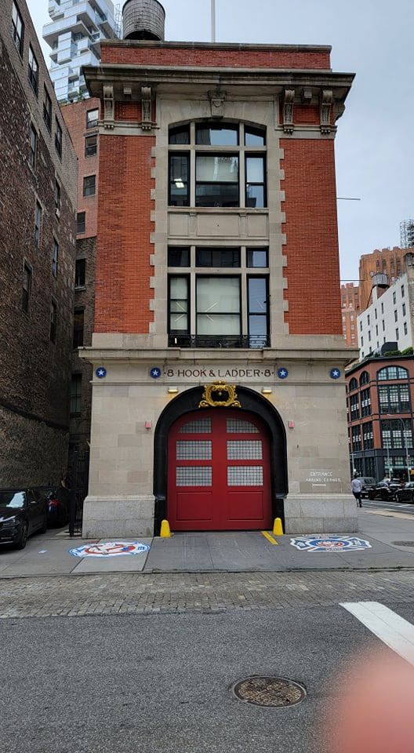
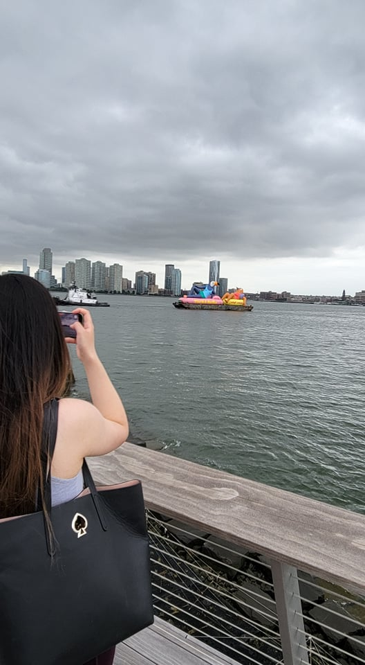
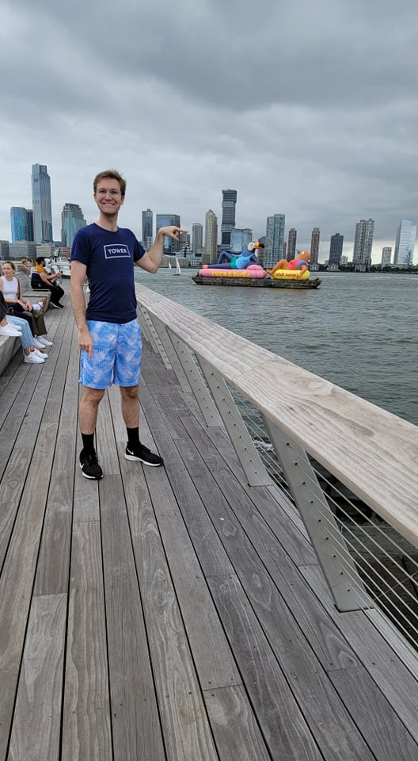
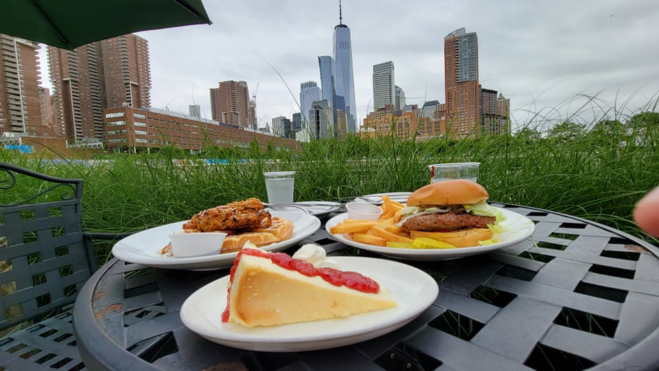
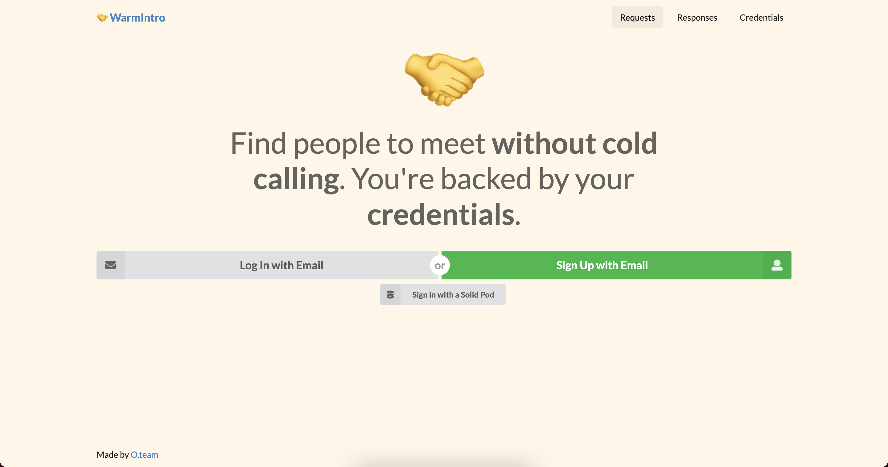
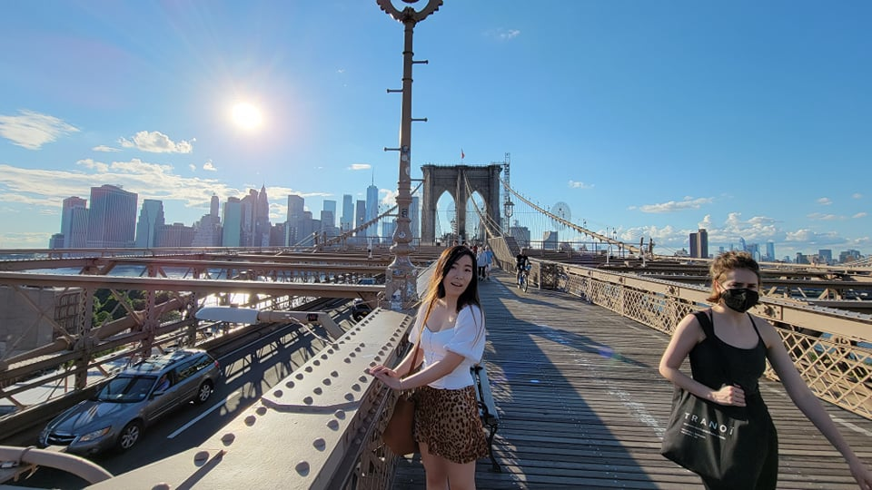
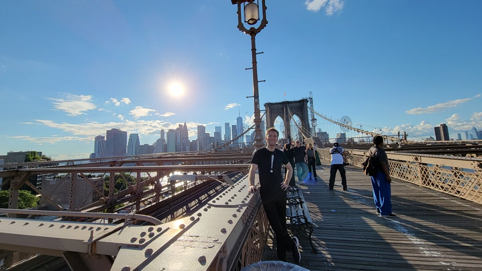

On Friday, I began working on all the infrastructure I'd need for warmintro.cc. I decided to use NextJS for the site and found a new (Well it was new to me, but it's been around for a while) UI library I love called Semantic UI. I also made a few users stories for how people will interact with the site. The goal was to get a rough draft down without diving into the technicals of verifiable credentials. And with an outline, I started to build the framework for the website.
I also don't think I did a great job explaining WarmInrto.cc in the last post. So, let me try doing it more concicely:
Society is built on nepotism. Those with more connections (or the resources to hire a sales team) will always come out on top even if they aren't the most qualified. But what if you could get connected with anyone without them already being in your network? The problem here is that there are more potential connections than the human mind can process. But, we can evaluate those connections based on your credentials. That way connections can be based on your accomplishments. Not your sales ability. You don't need collegues to make a Warm Intro. Your credentials do that for you.
Sunday started by going down the pier 26 for some free kayaking. I couldn't believe more people weren't doing it. Free kayaking in the Hudon river seems like something that would be a lot more popular! Here are some pics:
   I also worked a bit on the styling for WarmIntro.cc. I went back and forth on it, and honestly, maybe spending this much time on a design style was a waste of time, especially when I have a UI library that should be doing that for me. But, eventually I settled on the design below:
It might be copying the design style of clubhouse a little too much, but I do like this new kind of design. The background is warm and it doesn't feel as corporate as the standard white and blue.
Strangely, I also got an email from Didier saying that he and Matt "had a good meeting yesterday," and that they'd like to meet with me again. They weren't available until 6/22. So, maybe there is hope for this project after all. Thought, I'm not getting my hopes up.
On Sunday, I continued to work on WarmIntro.cc, but I was beginning to see some cracks in my original plan. I needed to learn a lot more about Verifiable Credentials before I continues, so I started to read the specification.
I also got a call from Titus and Saleh. They were excited I was coming to San Francisisco. It felt good to know that there were people excited enough to call me about it!
On Monday, I completed reading the Verifiable Credentials specification. It was a good read, but it raised more questions than it answered. I realized that Solid is woefully underequipt to handle some of the things the spec needs to do. The biggest open question is "Where do the private keys get stored." It would be very dangerous to put them on Pods, especially when most apps have read access to ANYTHING on the pods. I emailed Justin, Ruben, and Dmitri with my questions about how they're planning on integrating Solid into their verifiable credentials projects.
While waiting on a response from the three, I completed Chapter 13 of StarJump. But, I decided to move this chapter to the Chapter 12 position instead. The chapter was getting a bit long (as they always do) so I cut it at an earlier point when Laut it at her lowest. It actually made it perfect for moving it up. I hope that I was able to deliver the emotional score I wanted to. Ailin's feedback was that she likes it when I write commedy, but she had no comment on the emotional part. Sometimes it's hard to get honest feedback from Ailin if the feedback is negative. So, I might need to revisit this section in the future.
No one responded to my questions yet, though Justin did say that it's on the list of things to do. I mused that it was karma. I was contacted last week by someone wanting to give advice on Solid, and I said that I'd be happy to contract for it, but not hop on a call for free. So, why should I be able to get advice from the three people I emailed for free? I had talked to this guy before and found him a bit annoying, so I thought maybe that could justify me charging, but is that really enough? Maybe I should still give free advice even if I find the person annyoing. I don't know.
We also finally went to the Brooklyn bridge. Here's some pics:
 On Wednesday I started Chapter 14 of Star Jump, but didn't make it very far. It wasn't that I had writers block. I just kept distracting myself. Sometimes with bad distractiosn, sometimes with better ones.
I finished Shadow and Bone. After reading "The Way of Kings" and two "Hitchhikers Guide to the Galaxy"s I decided that if I'm writing a YA novel, I need to get more YA in my reading diet. And I wonder if StarJump is too complex. Because "Shadow and Bone" isn't. The main villian was overly evil. And the protagonist didn't have any agency. And a lot of the main events are delivered in dialog. For example, at a pivotal point in the story, one character just explains the villain's plan instead of having it shown. Still it was a bit fun, and there's a netflix series about it, so that's what we'll be watching later. I think I'm going to keep writing the same way, but maybe I'll have a bit more mind for characters just explaining things in dialog. There's a particular scene I'm thinking of where Renzen just explains his motivations to Anyo, and I think I could do a better job of showing it at least a bit before it's explained. I'm going to go back to the stormlight archive for the next book I'm reading, so that means I'm in for a long one.
I also researched the candidates I'm going to vote for in the upcoming election. I don't know if I did a great job. A lot of the candidates had similar points on their website so sometimes it felt like I was choosing at random. Sometimes I'd see something like "This one supports participatory budgeting," and I'd be like "Hell Yeah!" But other times everyone just seemed generic. If I did more research I'm sure I would have been able to fully compare the experience and scandalls surrounding every candidate for New York City Comptroller or other positions, but I didn't put in enough time. I kinda wish I could have someone who just understands my political nuances and tell me who to support.
That got me thinking that that's basically like a political party, but of course, there are problems with political parties. The winner takes all system makes things tend to only two parties and doesn't allow for fringe ideas. New York City is pretty cool in that it uses Ranked Choice Voting, but it's still winner takes all. But, then I thought about direct democracy. Of course, direct democracy has the problem where every citizen would need to be informed about everything. But, what if you could take the best parts of a system that depends on political parties and combine it with direct democracy.
Under this system, there would be no representatives. Everyone gets a vote on every issue. Anyone in the country can propose legislation and that legislation starts with 0% approval, but everyone can vote on it and once it reaches 50% (or maybe some other number?) approval it passes. But, we don't want people to have to stay up to date on every topic, so you can defer your vote to someone else, ie a political party you trust. Anyone can create a political party. It could be a polital party of 30 people or 30 million people, they all get proportional votes on legislation. If you do want to keep up to date on everything, you could vote on each issue, making you a political party of one person. Ailin is a bit afraid that this technique would give too much power to the uninformed masses, and maybe that's true. It would be unwise to swap an entire country's election system to one like this before trying it out at a smaller scale, but I think it might go a long way to making politics less in the hands of the elites of society.
Anyways, here are my picks for the election:
On Thursday, I started packing. I picked up boxes from trader joes and packed most of my belongings. There's still a lot of work to do to get the belongings Ailin and I share packed, but it's a start.
I decided to get back on WarmIntro.cc even if my answers are unanswers (I have a feeling that the answer is that we don't know yet). So, I did more research on private key storage. I started reading the specification for the W3C Digital Credentials Working Group's Universal Credentials Wallet, and it is very underdeveloped. When I talk with Didier and Matt, I'll have to inform them that there will need to be some work in private key storage before we get a full solution, but if they want to help fund that, that would be awesome!